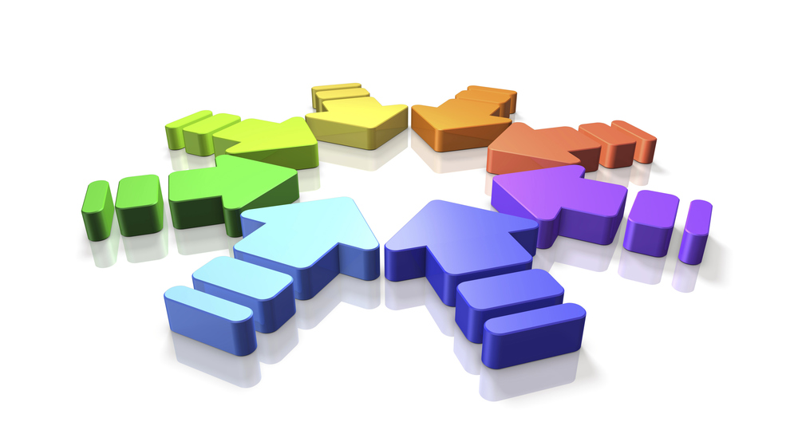

An innovative way to search, match and compare results from multiple sources
Leveraging the product of many search results
SearchProd is an intelligent search and matching tool which combines results from
multiple different sources and ranks them according to a variety of features, providing accurate relevant results.
